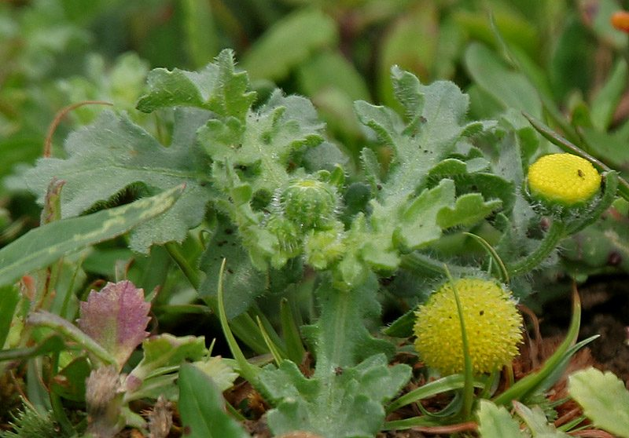

मुस्तरुMadras Carpet
Grangea maderaspatana · Asteraceae · FLR-0243

- Scientific name वैज्ञानिक नाम
- Grangea maderaspatana (L.) Poir.
- Family कुल
- Asteraceae
- Hindi हिंदी
- मुस्तरु
- Local names स्थानीय नाम
- mustaru, madras carpet, grangea
- Status here यहाँ की स्थिति
- native
- Movement आवागमन
- Resident, here all year
- Known from कहाँ दर्ज
- Others have published records from the wider Awadh–Purvanchal plain, none yet from Basti–Ayodhya अवध–पूर्वांचल से दूसरों के प्रकाशित अभिलेख, बस्ती–अयोध्या से अभी नहीं
- IUCN IUCN
- not evaluated
- Review समीक्षा
- audited and independently read
When to look कब देखें
Expected mainly in January, February, March, April, October, November, December. मुख्यतः जनवरी, फ़रवरी, मार्च, अप्रैल, अक्टूबर, नवंबर, दिसंबर में अपेक्षित।
Uses and possibilities उपयोग और संभावनाएँ
Drawn from the documented uses in the profile below, where each is labelled traditional, current or a research lead. All uses →
मुस्तरु / Madras Carpet
Grangea maderaspatana (L.) Poir. — Asteraceae
मुस्तरु (कार्पेट वीड, madras carpet) — भारत का एक छोटा सा, रेंगने वाला खरपतवार जो सर्दियों में खेतों की मेड़ों, बंजर जमीन और बाग़ों में दिखता है। पत्तियाँ बहुत छोटी, एक दूसरे के विपरीत, पूरे पौधे पर लगी हुई। फूल छोटे, पीले, सिर जैसे। पौधा बहुत ही सूक्ष्म होता है, जमीन पर एक गलीचा (carpet) बनाता है — इसीलिए इसे "carpet weed" या "madras carpet" कहते हैं।
Quick Identification त्वरित पहचान
| Feature | Description |
|---|---|
| Plant form | Prostrate, mat-forming winter annual, 5–15 cm tall, forming dense carpets |
| Leaves | Opposite, simple, spatulate to obovate, 0.3–0.8 cm, entire, hairless or slightly hairy |
| Flowers | Tiny, yellow, discoid flower heads, 2–3 mm across, in small clusters |
| Stem | Slender, herbaceous, branching, rooting at nodes |
| Fruit | Tiny achenes with minute pappus |
| The test | Very small plant; forms dense mat; opposite tiny leaves; yellow flower heads |
Field tip: Look on sandy waste ground and field margins for a minute, creeping plant forming a dense green mat close to the ground. The tiny leaves and small yellow flower heads are diagnostic. The plant is so small that it is easily overlooked. Often multiple plants form overlapping carpets, which is how it got its common name.
हिंदी — कैसे पहचानें: बहुत ही छोटा, जमीन पर गलीचा बनता है। पत्तियाँ बहुत छोटी। पीले फूल।
Morphology आकारिकी
Biometrics (typical measurements for plants in northern India):
| Measurement | Range |
|---|---|
| Plant height | 5–15 cm |
| Leaf length | 0.3–0.8 cm |
| Leaf width | 0.2–0.4 cm |
| Flower head | 2–3 mm |
| Plant spread | 10–30 cm |
Stem: Very slender, herbaceous, branching profusely, often rooting at the lower nodes, creeping to weakly ascending. The stems are so fine that they are barely visible among the foliage.
Leaves: Opposite, simple, sessile or nearly so, spatulate to obovate, 0.3–0.8 cm long, 0.2–0.4 cm wide, entire, hairless or with a few scattered hairs. The leaves are so small that they give the plant an open, delicate appearance.
Flowers: Collected in tiny discoid (disk-shaped) heads that are 2–3 mm across. The heads are pale yellow, containing only a few disc florets. The heads are arranged in small clusters or scattered on short peduncles. The inflorescence as a whole is inconspicuous and easy to miss.
Fruit: Tiny achenes with a minute pappus (when present).
Mat-forming habit: The plant's tendency to form dense mats is due to its profuse branching, low height, and the ability to root at lower nodes. Multiple plants often overlap and interweave, creating a carpet-like appearance.
हिंदी: बहुत पतला और नाज़ुक। पत्तियाँ और फूल दोनों छोटे-छोटे।
Behaviour & Ecology व्यवहार और पारिस्थितिकता
Grangea maderaspatana is a winter annual of Indian origin that grows in open, disturbed habitats from October through April. The plant does not compete with standing crops but establishes readily in fallow fields, sandy wastelands, and field margins. It prefers well-drained, sandy, or gravelly soils and grows in dense mats where moisture is adequate in winter.
The plant is self-compatible and produces seed readily. Seeds are short-lived and germinate in cool conditions.
हिंदी: सर्दी में तेजी से बढ़ता है। बंजर ज़मीन पर आम है।
Life Cycle / Phenology जीवन चक्र
| Month / season | Event |
|---|---|
| September–November | Seed germinates in autumn with monsoon decline and cool temperatures |
| November–February | Vegetative growth; plant forms spreading mat |
| February–April | Flowering; flowering throughout the cool season |
| April–May | Fruiting; seed maturation; plant senesces |
Seeds germinate in cool, moist conditions and are short-lived. The plant is an obligate winter annual in eastern UP.
हिंदी: अक्टूबर-नवंबर में अंकुरण, दिसंबर-फरवरी में बढ़ोतरी, फरवरी-अप्रैल में फूल।
Associated Species / Interactions संबंधित प्रजातियाँ
- Wasteland companions: Found with other small winter herbs in fallow fields and sandy wastelands.
- Mat-forming associates: Often forms carpets with Scarlet Pimpernel and other low-growing winter herbs.
- Seed dispersal: Seeds are dispersed by water, on farm tools, and occasionally by livestock.
Pests and Diseases कीट और रोग
- No specific serious pests; the plant is generally healthy.
- No specific diseases; fungal issues are rare due to the plant's small size and open growth form.
Agricultural / Human Relevance कृषि प्रासंगिकता
As a weed:
Grangea maderaspatana is a minor weed of winter cultivation in eastern UP. The plant is weak and does not compete strongly with crops. It establishes readily in fallow fields and contributes little to crop loss. It is easily controlled by hand-weeding or light cultivation.
No traditional medicinal or ethnobotanical use is recorded for this species in India.
Today. The plant is a minor, sporadic weed of wastelands and field margins in eastern UP.
Research direction (a lead, not a result). The mat-forming habit of Grangea maderaspatana could be studied as a case of ecological adaptation to competition avoidance — the plant's strategy of staying small and covering ground may be an alternative to vertical growth.
हिंदी: बंजर जमीन और मेड़ों पर आम। गंभीर खरपतवार नहीं है। हाथ से निकाल दिया जाता है।
Expected Locally स्थानीय रूप से अपेक्षित
Not a field record. Written from published accounts for eastern Uttar Pradesh. No confirmed local sighting yet — if you have seen it, that is what the atlas needs.
अभी तक स्थानीय पुष्टि नहीं। यह विवरण प्रकाशित स्रोतों से है, किसी अवलोकन से नहीं।
To be expected in wastelands, sandy field margins, and fallow fields throughout Basti district from December to April. GBIF holds published records from the wider Awadh–Purvanchal plain. A first local record would show the characteristic mat-forming habit.
Distribution वितरण
Global range: Native to tropical and subtropical Asia, particularly India, Sri Lanka, and Southeast Asia.
In India: Widespread in wastelands, field margins, and disturbed soils throughout the country.
In Uttar Pradesh: Common in wastelands and margins across the state.
In Basti district / eastern UP: Expected in winter wastelands and field margins; GBIF records from the wider region.
Research Questions शोध प्रश्न
Anyone can investigate these | कोई भी इन प्रश्नों की जाँच कर सकता है
- How many individual plants are hidden within one "carpet" of Madras Carpet, and how are they rooted? — Carefully excavate a mat; count individual plants and document their rooting pattern.
- How many seeds does one plant produce, and how does the seed number vary between plants growing in sandy versus clay soils? — Grow plants in both soil types; count seeds at maturity.
- What is the smallest possible area of soil a Madras Carpet plant can cover, and what is the maximum carpet size you can find in your area? — Measure multiple carpets; estimate minimum and maximum coverage.
- Which insects visit the tiny yellow flowers, and how frequently? — Observe flowers for 30 minutes with a magnifying glass; record all insect visitors.
- If you allow a Madras Carpet mat to cover the ground for one season, does it prevent other plants from establishing nearby? / अगर आप मुस्तरु को एक मौसम पूरा बढ़ने दें तो क्या पास-पास के पौधे नहीं उगते? — Compare plant diversity and density in areas with and without Madras Carpet.
Similar Species मिलती-जुलती प्रजातियाँ
| Species | How to tell apart | हिंदी |
|---|---|---|
| Scarlet Pimpernel (Lysimachia arvensis) | Leaves with red dots; red or blue solitary flowers, not yellow heads; taller plant | पत्तियों पर लाल बिंदु |
| Chickweed species (Stellaria media) | Leaves opposite but broader; white flowers; more hairy | बहुत चौड़ी पत्तियाँ, सफेद फूल |
| Other Asteraceae | Larger flower heads; different leaf structure | बड़े फूल |
Field rule: A tiny mat-forming winter annual with opposite miniature leaves and minute yellow discoid flower heads is Madras Carpet.
Taxonomy & Classification वर्गीकरण
Original description. Originally described as Cotula maderaspatana by Linnaeus in 1753, and transferred to Grangea by Jean Louis Marie Poiret (1804). The epithet maderaspatana means "of Madras" (modern Chennai), reflecting the species' association with that region.
Subspecies. Monotypic — no subspecies currently recognised.
Family and order placement. Asteraceae, order Asterales. The genus Grangea holds about 1–2 species; it is a small genus within the large daisy family. Grangea maderaspatana is the type species.
Phylogenetic notes. Grangea maderaspatana is closely related to other small-flowered, ground-hugging Asteraceae genera of tropical origin.
IUCN status rationale. Not evaluated. Widespread and native; not assessed.
Photo Gallery फोटो गैलरी
Photos needed आवश्यक फोटो
- [ ] Dense mat of plants on sandy soil (पूरा गलीचा)
- [ ] Close-up of leaves and small flower heads (पत्तियाँ और फूल)
- [ ] Single plant showing branching structure (एक पौधा)
- [ ] Seed head (बीज की परिपक्वता)
No photos yet — add field photos to media/species/madras_carpet/ and run node scripts/sync_photos.js.
References संदर्भ
- Linnaeus, C. (1753). Species Plantarum. Laurentii Salvii, Holmiae, Vol. 2, p. 893. [original description as Cotula maderaspatana]
- Poiret, J.L.M. (1804). Encyclopédie Méthodique, Botanique, Supplement. Paris. [transfer to Grangea]
- Hooker, J.D. (1876). The Flora of British India, Vol. 3. L. Reeve, London.
- Duthie, J.F. (1903). Flora of the Upper Gangetic Plain and of the Adjacent Siwalik and Sub-Himalayan Tracts. Government Printing, Calcutta.
- Pandey, R.P. & Pandey, P. (2004). Herbaceous flora of wetlands in Harike wetland, Punjab. International Journal of Ecology and Environmental Sciences 30(4): 333–345.
- GBIF Occurrence Data — Grangea maderaspatana, India (2026).
Source file: species/flora/weeds/madras_carpet.md